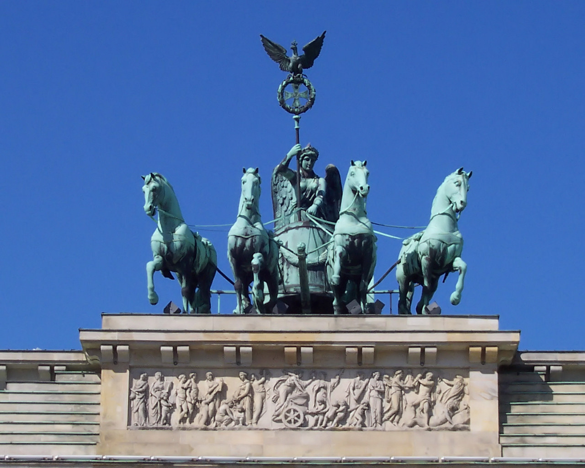
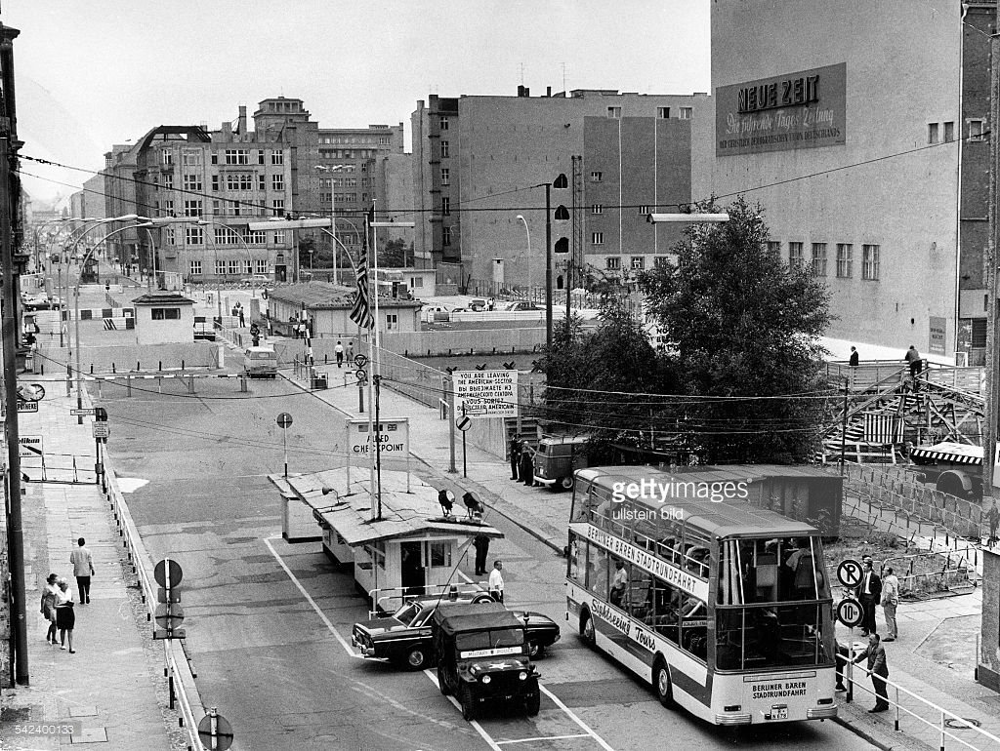
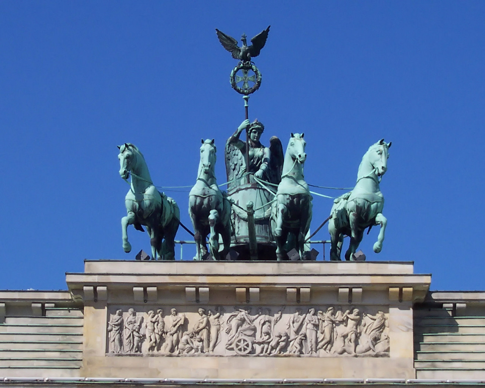
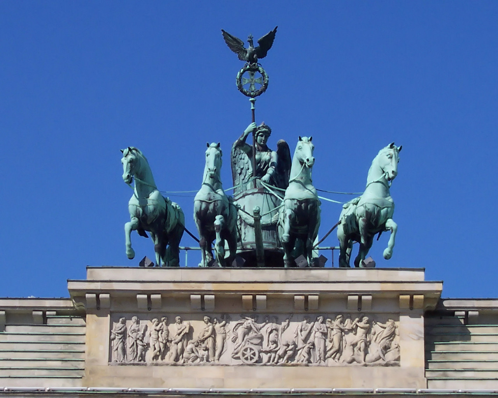
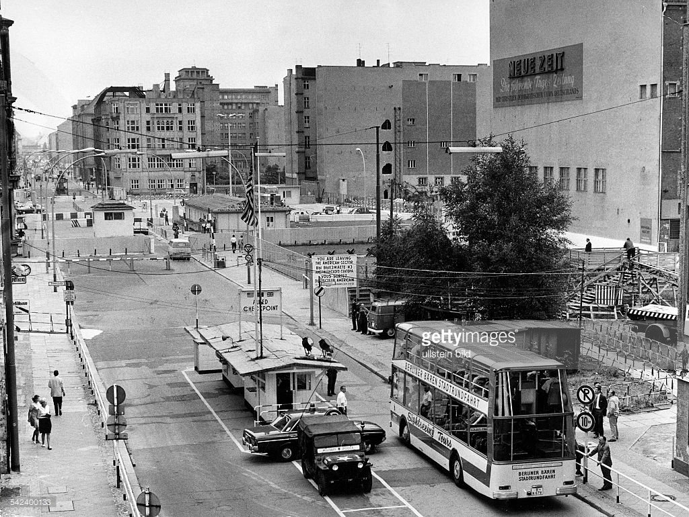
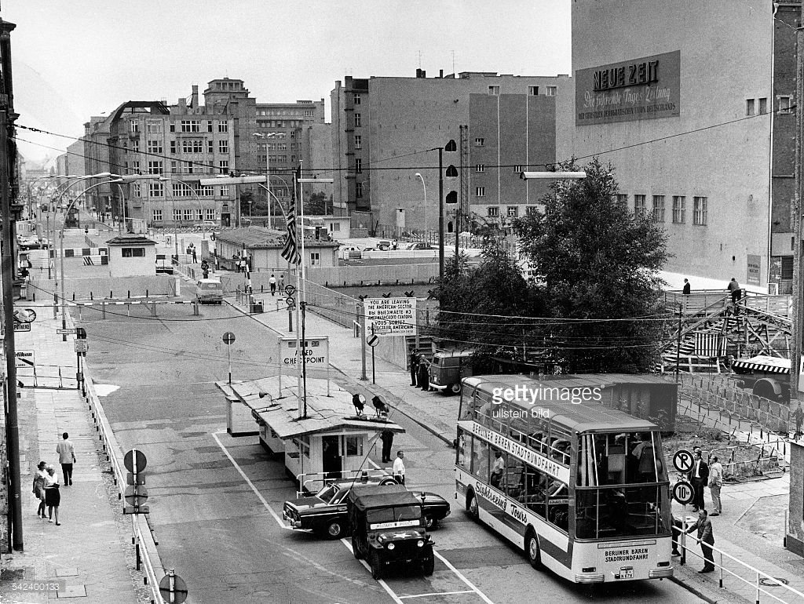

HOME
|
PLACES
|
FOOD
|
INFO
|
LOGOUT
Places to visit
Click the image


Created by Beta bots
Call Us On:
8379657997
HOME
PLACES
FOOD
INFO
LOGOUT
FOLLOW US ON
We always want your
feedback


 

 
